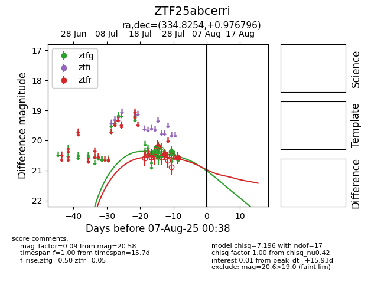

Target ZTF25abcerri at 2025-08-07 06:25, see:
FINK: fink-portal.org/ZTF25abcerri
Lasair: lasair-ztf.lsst.ac.uk/objects/ZTF25abcerri
ALeRCE: alerce.online/object/ZTF25abcerri
alt names
ZTF25abcerri (ztf,fink)
coordinates:
equatorial (ra, dec) = (334.8254,+0.97680)
galactic (l, b) = (64.2125,-43.87749)
photometry
last ztfg=20.37, ztfr=20.58
3 ztfg, 2 ztfr detections
